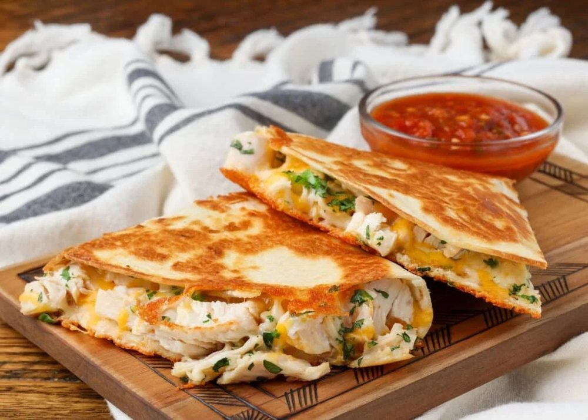

Salgados · Massas fritas/assadas
Quesadillas de frango cremoso

Ingredientes
- 400 g de frango desfiado e temperado
- 4 tortillas grandes
- 100 g de muçarela
- 80 g de requeijão light
- Páprica e cebolinha
Modo de preparo
- Misture o frango frio com o requeijão e a cebolinha.
- Distribua sobre metade de cada tortilla.
- Acrescente a muçarela e dobre ao meio.
- Congele separadas por papel-manteiga.
Observação
No dia: air fryer a 180 °C por cerca de 8–12 minutos, virando na metade, até ficar crocante e bem quente por dentro.